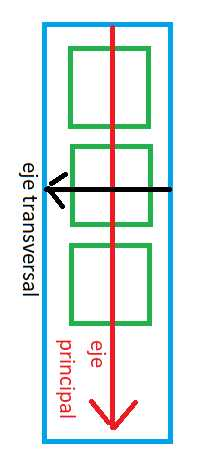

Cascading Style Sheets Flexbox: justify-content
La segunda propiedad que podemos cambiar a un contenedor de cajas flexibles se llama justify-content.
La propiedad justify-content controla como se distribuyen los items a lo largo del contenedor, es decir, define la alineación a lo largo del eje principal.
La propiedad justify-content, ayuda a distribuir el espacio libre adicional sobrante cuando todos los elementos flexibles de una línea son inflexibles o son flexibles pero han alcanzado su tamaño máximo. También ejerce cierto control sobre la alineación de los elementos cuando desbordan la línea.
Su sintaxis:
.container {
justify-content : flex-start | flex-end | center | space-between | space-around | space-evenly | start | end | left | right | safe | unsafe;
}
Por defecto la propiedad justify-content almacena el valor "flex-start".
Los valores que podemos asignarle a la propiedad "justify-content" son:
- flex-start
- flext-end
- center
- space-between
- space-around
Cuando la propiedad flex-direction almacena el valor "row" el eje principal es el horizontal y el eje transversal es el vertical:
Cuando modificamos la propiedad "justify-content" los item se distribuyen con respecto al eje principal del contenedor.
Probemos ahora de seleccionar en la priedad "flex-direction" el valor "column" y pasemos a ver que sucede con cada valor que le podemos asignar a "justify-content". Los espacios ahora aparecen en forma vertical, esto debido a que ha cambiado el eje principal y el eje transversal:
La propedad "justify-content" tiene sentido cuando hay espacio no ocupado por los items y la distribución de dicho espacio es:
- flex-start Los items aparecen al inicio del contenedor
- flex-end Los items aparecen pegados al final del contenedor
- center Los items aparecen centrados en el contenedor
- space-between Se distribuyen los items ocupando todo el espacio disponible, con espacios iguales entre ellos, pero sin dejar espacio al inicio y al final del contenedor
- space-around Se distribuyen los items ocupando todo el espacio disponible con espacios iguales entre ellos, pero dejando espacio al inicio y al final